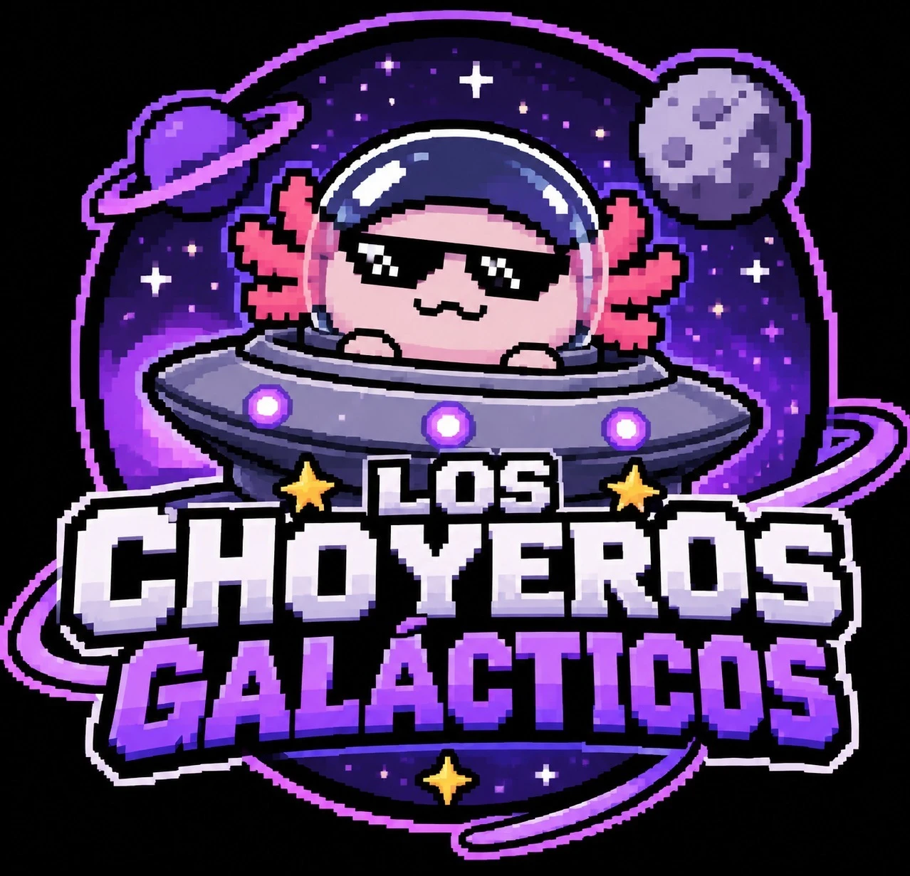
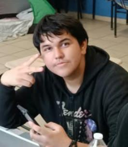

Junior Mission Orion es una aventura espacial diseñada para despertar la curiosidad de los
más pequeños.
Explora el universo, descubre sus misterios y aprende sobre la exploración espacial a través de experiencias
interactivas.
¡El futuro de la exploración comienza contigo!
Mission Orion es una experiencia interactiva diseñada para que los niños descubran el fascinante mundo de
la exploración espacial. A través de actividades, desafíos y aventuras, podrán aprender sobre el espacio
de una manera divertida y emocionante.
Problema
Muchos niños sienten curiosidad por el universo, pero no siempre cuentan con herramientas interactivas y
entretenidas que les permitan descubrir cómo funciona el espacio y cómo se realizan las misiones
espaciales.
Objetivo principal
Despertar la curiosidad científica de los niños mediante una experiencia interactiva que les permita
aprender sobre el espacio, descubrir nuevos conocimientos y convertirse en pequeños exploradores
espaciales.
Importancia
La educación espacial puede inspirar a las nuevas generaciones a interesarse por la ciencia, la
tecnología, la ingeniería y las matemáticas (STEM), fomentando la creatividad, la imaginación y el
pensamiento científico desde pequeños.
02 · Mission objectives
Objetivos de la misión
“Cada misión es una oportunidad para aprender algo nuevo. Nuestro objetivo es transformar la
curiosidad de los niños en grandes descubrimientos.”
Objetivo 01
Explorar la Luna y Marte
Acercar a los niños al mundo espacial mediante una experiencia interactiva llena de descubrimientos.
Objetivo 02
Aprender jugando
Enseñar conceptos sobre el espacio, los planetas y la exploración espacial de forma divertida y sencilla.
Objetivo 03
Despertar la curiosidad
Estimular la imaginación, el pensamiento científico y las ganas de descubrir cómo funciona la Luna y
Marte.
Objetivo 04
Inspirar futuros científicos
Motivar a las nuevas generaciones a interesarse por la ciencia, la tecnología y la investigación
espacial.
03 · How it works
Cómo funciona
“Cada gran descubrimiento comienza con una pregunta. En Junior Mission Orion, los niños
aprenden, exploran y se convierten en protagonistas de su propia aventura espacial.”
01
Inicio
Comienza la aventura
El usuario ingresa a Junior Mission Orion y conoce su misión espacial. Se prepara para comenzar a
explorar la Luna y Marte.
02
Exploración
Aprende y descubre
A través de actividades y experiencias interactivas, los niños exploran conceptos espaciales, descubren
información y aprenden mientras avanzan.
03
Descubrimiento
Completa tu misión
Los usuarios ponen a prueba lo aprendido, superan los desafíos de la misión y descubren nuevos
conocimientos sobre la Luna y Marte.
Plataforma de lanzamiento · TierraRumbo a la Luna
04 · The technology
La tecnología
HTML
Estructura
Marcado semántico del contenido del prototipo.
CSS
Presentación
Estilos, diseño responsive y animaciones.
JS
Interacción
Lógica y comportamiento en el navegador.
Arquitectura
Navegador / Android APK / PC Rust (.exe)
└─ Junior Mission Orión (HTML5 + Three.js 3D)
├─ Motor educativo infantil (Modo Explorador / Cadete / Artemis)
├─ Datos NASA/CSA (Open APIs, DONKI, OSDR, RadLab, Mars Trek, CSA)
├─ Simulación de colonias (Luna · Marte · Tierra + Multijugador P2P)
└─ Robbie IA (Chat en línea + Motor 100 % Offline NASA)
Aplicación autocontenida con modo híbrido: consulta datos NASA en vivo y funciona 100 % sin conexión en escuelas.
05 · Team
El equipo

Emblema del equipo
Los Choyeros Galácticos
La Paz, Baja California Sur · Equipo creador de Junior Mission Orión y Robbie el ajolote espacial.

Irvin Jaziel Valdez Guzman
Programador de diseños
Ayudante en corrección de errores y beta tester.
Dana Paola Flores Ortega
Dirección artística
Creadora de imágenes y beta tester.
Hector Miguel Cota Castillo
Programador
Creador de versiones funcionales.
Derek Valdez Guzman
Aportador de ideas
Creador de bases experimentales.
Adalid Arista Lomas
Programador de multifunciones
Profesor Antonio Marizcal
Asesor
06 · Project demo
Demo del prototipo
Accede al prototipo
Juega en línea, descarga la versión para tu dispositivo o revisa el código del proyecto.
Última release en GitHub: v30.1.0 · Instalador Android (.apk) y PC Windows (.exe)
07 · NASA Space Apps
NASA Space Apps Challenge 2026
NASA Space Apps Challenge es un hackathon internacional anual en el que equipos de todo el mundo
desarrollan soluciones a retos basados en datos y ciencia espacial.
Reto elegidoBuild a Junior Astronaut Mission TrainerConstruye un
simulador de misiones para jóvenes astronautas.
CategoríaJuegos, software y exploración espacial
Sede / CiudadLa Paz, Baja California Sur, MéxicoColegio Juan Pablo II
Fecha del evento14 y 15 de noviembre de 2026Sábado y domingo · Evento
presencial